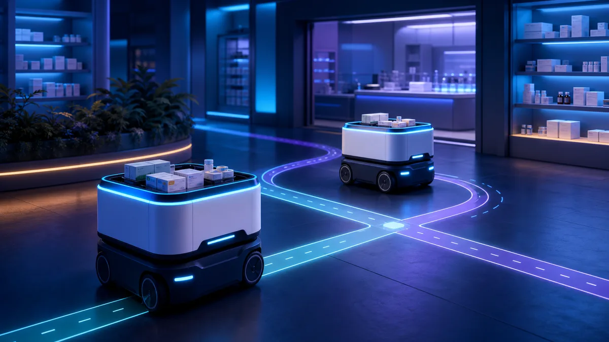
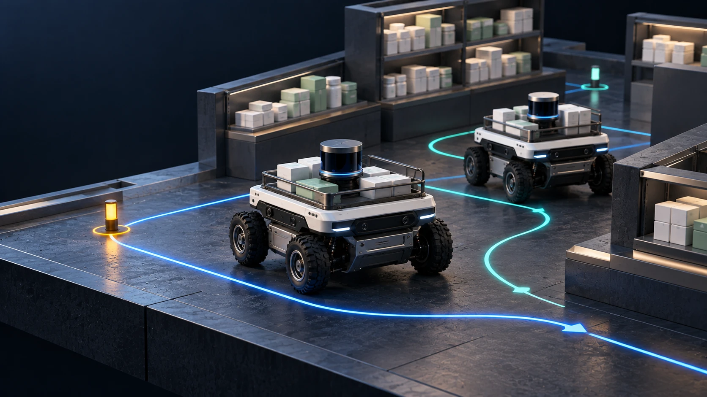
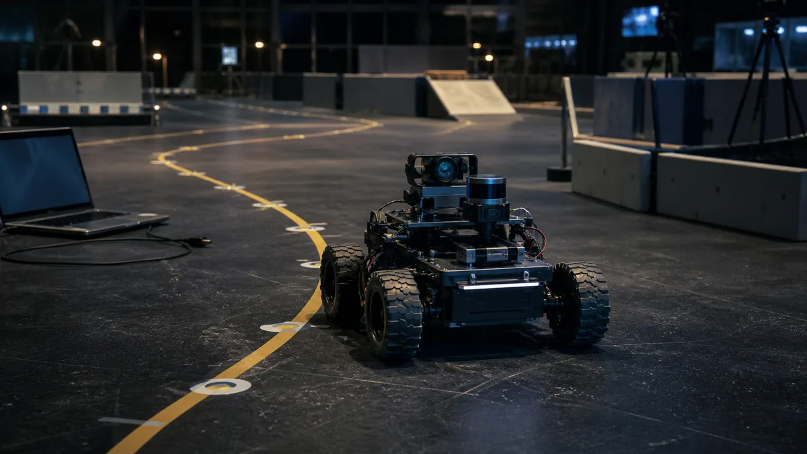
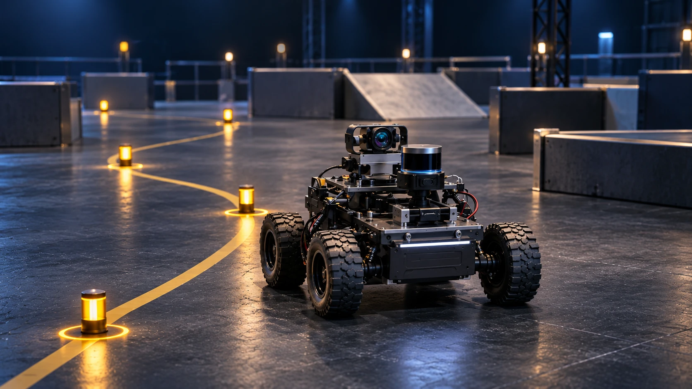
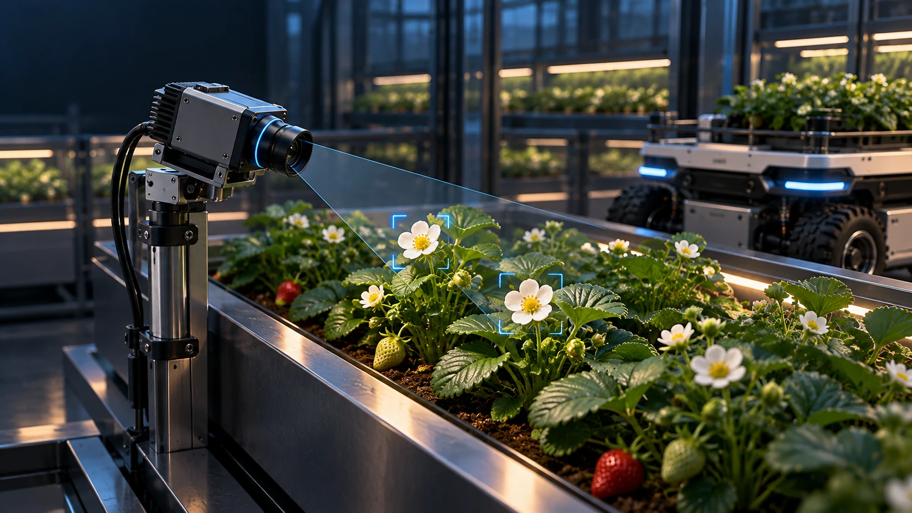
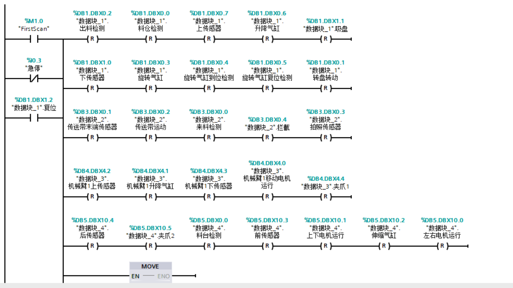
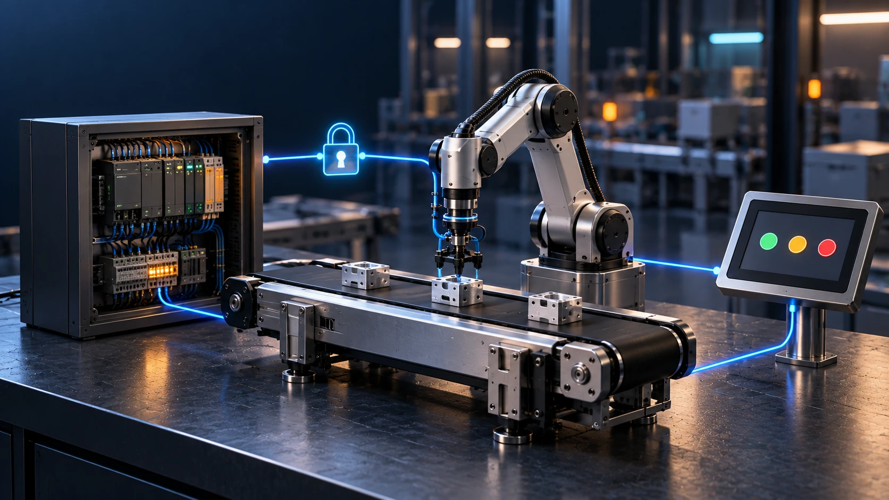
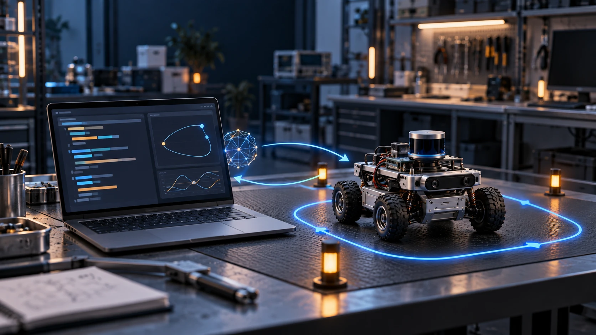

以你认可的第二张为参考。
智慧药房封面已选用于原型，其余四张是待选稿。原图和正式博客都保留。
以下新图为 AI 概念插画，用于封面设计，不作为比赛照片、实物外观或测试证据。
智慧药房双车系统
已认可 · 原型采用
你认可的第二张
睿抗智能侦察车
新候选 · 待选
原封面

沿第二张风格重做
智慧农业 · 视觉训练
新候选 · 待选
原封面

沿第二张风格重做
ISCC 微型工厂
新候选 · 待选
原封面

沿第二张风格重做
AI 协作与机器人调试
新候选 · 待选原封面
